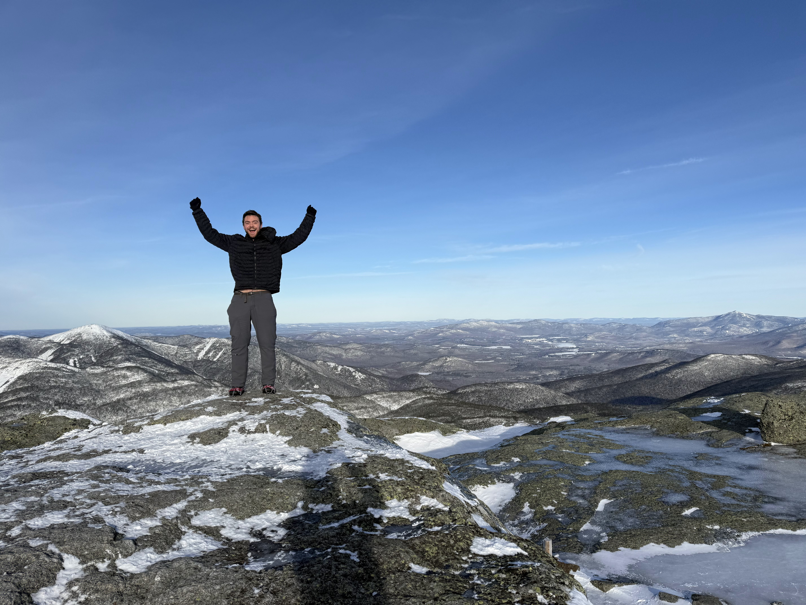

Mount Marcy - New York State High Point

Wacky winter weather welcomed us to a warm Mount Marcy Summit.
As an extra challenge and to get some more long winter hiking experience my college roommate and I had been planning to tackle Mount Marcy (5,343ft; 1,628m) after Christmas assuming weather conditions allowed it. We aimed to do the day trip, about 14 miles and 3600' of elevation via the Van Hoevenberg trail from Heart Lake, route here. The trip was defined by its wild winter weather from start to finish, but Ethan, Tessa (Ethan's sister who joined us on the trip) and I got a nice window to shoot for the summit on December 28th. Ethan was there at the start of my highpoint journey on Mt Davis PA, helped me find the elusive Point Reno in DC, and joined the Great Value road trip to the Texas high point, so it was great to try to snag another with him and his sister!
December 26th - Day 1 - Racing a Snow Storm, Boston MA to Red Hooke NY
On day one my task was to get to Ethan's place in Red Hooke NY where I would stay the night and we would then depart for Lake Placid the next day. In good old New England fashion there was a significant snow maker storm forecast to dump up to a foot of snow on the Hudson Valley around 5pm, so I had my deadline to beat. I raced west from south of Boston and did not hit any traffic until I stopped for dinner at a McDonalds adjoining a Walmart Super Center. It was slammed. I had to park several aiels away and play frogger around the edge of the massive parking lot with no sidewalks. The dinner detour cost me quite a bit of time and left me somewhat stressed about beating the snow. Thankfully not a flake of snow was on the ground by time I reached my destination. However within 10 minutes of my arrival snow bands started puking. The photo below was taken about 45 minutes after I parked and 30 minutes after it started coming down.
Story continues after Day 1 photos.
 The snowflakes were small but furious. Some car shuffling was in order to ease the cleanup we would have in the morning.
The snowflakes were small but furious. Some car shuffling was in order to ease the cleanup we would have in the morning.
December 27th - Day 2 - Shoveling out and Drive to Lack Placid NY
Morning called for digging out and seeing how my car, Mu, faired after her first big snow. We had time for a romp around in our snowshoes to make sure they were ready for Marcy before our late morning departure for Lake Placid where we would be staying the night.
The further north we drove in New York the less snow we saw. Red Hooke seemed to be close to the bullseye for the previous night's storm, at least in New York anyway. We finally saw some snow again well past Lake George and it was dark when we saw the Lake Placid ski jump emerge looming out of the grey.
We slid through the snow covered streets of town to the Hannaford to stock up on good for the next day's adventure, noticing several folks with Japanese themed winter parkas milling about, many with beers in tow. Perhaps the slope style team preparing for their weekend off? Many sugar filled muffins in hand and an assortment of other cursed trail nibbly bits we headed to the hotel and then to dinner at Mr. Mike's Pizza. We picked the right time to arrive, what was once a cavernous seating area upon our entry quickly became cramped with hungry ski kids back from the slopes. I convinced the table to order more than we needed but the pizza and calzone were delicious and I do not regret the leftovers in the slightest.
Back at the hotel we prepped our bags, our layers, and our minds for the cold early start we had set our alarms to achieve. The temperature for our hike would be a roller coaster starting near zero at the trailhead at 6am and potentially climbing above 45 degrees at the summit. Sweet dreams for a layering nightmare.
Story continues after Day 2 photos.
 Mu with a nice 10 inches of fresh snow. A California girl by birth I speculate that this was her first significant snowfall, but just a taste of what was to come to coastal New England later in the winter.
Mu with a nice 10 inches of fresh snow. A California girl by birth I speculate that this was her first significant snowfall, but just a taste of what was to come to coastal New England later in the winter.
December 28th - Day 3 - Bid for Marcy and Racing Freezing Rain Home
I did not need to use the batter jumper so we were off to a good albeit cold start. We eased our way out of town, 30 minutes up to the High Peaks Information Center. Hand warmers were a non-negotiable for getting gear out of the roof box and packs prepped for departure. We didn’t need any coxing onto the trail, we all moved at a too fast pace out of the parking area and sustained this pace for the first couple miles to Marcy Dam just to stay warm. Ice crystals glinting suspended in the frigid air and glinting in our heading beams kept us in a trance as we speed walk.
Lucky for us, the trail was exceedingly well packed to Marcy Dam, and this as we crossed the bridge below the dam at first light the hard pack highway continued ahead. One of the reasons we had chosen to summit on Sunday was for just this reason, betting that Saturday trekkers would plow the trail and save us the energy. For now we continued to carry our snowshoes on our back proceeding in micro spikes as the morning glow began to light up the winter wonderland around us.
As we climbed the inversion layer was physically noticeable. Climbing out of the Phelps Brook basin and over to the Marcy Brook basin the ice that had formed on my beard from my breath suddenly began melting. Just as quickly as it had gone it came back when we dropped just slightly back down to cross Marcy Brook only to once again melt away as we climbed back up the other side.
Gaining the ridge of Mount Marcy's Northwest Peak we were treated with a golden hour view back towards Lack Placid. To our surprise the Lake Placid ski jump was visible through the trees. Rounding below Little Marcy we came across a group of eight lads who shared their intentions of Mount Haystack. We had made great time so far as had they and this put them in high spirits. We passed them and soon came across a sign poking out of the snow noting the Phelps Trail cutoff to Haystack which lead into an unbroken snow bank. I certainly was glad we were not joining them on their endeavor.
We broke tree line and continued on in micro spikes as the trial remained packed as long as you stayed on the rail. There was not a puff of wind and the temperature was rapidly approaching 40 degrees. Beautiful rime ice and ice flows caked every non snow covered surface. Being the heaviest of the group, and leading up the trail, I did have one unfortunate run in with a spruce trap, but we soon gained the rock and ice on the ridge to the summit.
Conditions allowed us to set down our packs and get out our lunches to enjoy the view. We had discussed ski googles, balaclavas, and extra mittens in our preparation for the normal Marcy winter conditions. Instead we quite literally had a picnic.
While we took our time soaking in the view, we had two important ticking clocks in our heads. The first was dictated by the unusual warmth. The strong temperature inversion experienced on the way up, now almost 42 degrees at the summit, meant snow that had graciously supported our assent in micro spikes might necessity slower snow shoes on the way down. The longer we dallied the less sure our footing. The second timer was also related to the temperature inversion. Precipitation was coming, and in several hours that precipitation would turn from rain to its much more dangerous sibling: freezing rain. Driving on 87 south with all of the other winter weekend New Yorkers when the rain starts to freeze on the pavement is not my definition of a happy place.
So off we flew, in a controlled walk jog, back down the mountain. I tried an ill-advised "glissade" down the upper ridge line, and was glad I made sure there was a nice snow bank to stop my uncontrolled descent. Strava says I hit 23 miles per hour. Oops. We passed our intrepid eight now coming up, having smartly abandoned their quest for Haystack, and several other groups. Once fellow couldn't help up quip that we clearly liked carrying our snowshoes around on our back. Very fair criticism. But given we had not created any postholes on our way up and so far had not on the way down, I was still in camp micro spikes for speed. We continued to sail down the mountain, past the inversion and any risk of needing the snowshoes, and past many more groups headed for the summit. Below Phelps Brook we took some more time taking in the views we had missed coming up in the dark. However past Marcy Dam, after 12 miles we were ready to be done, slogging through the last couple miles in constant state of annoyance that the trail just kept going.
The trailhead was a delight to see, and the left over calzone and muffins were a delight to taste. We headed back to Lake Placid for an important coffee stop before heading south to race the freeze. No race was needed in the end as our almost 3 mile per hour pace up and down Marcy gave us plenty of time for a safe journey home.
Story continues after Day 3 photos.
 The novelty of seeing our breath so easily soon became a bad dream of hands so cold I couldn't hold my trekking poles. The good news about single digit hiking is that you tend to move fast.
The novelty of seeing our breath so easily soon became a bad dream of hands so cold I couldn't hold my trekking poles. The good news about single digit hiking is that you tend to move fast.
 Old Marcy Dam with twilight breaking over the horizon.
Old Marcy Dam with twilight breaking over the horizon.
 Phelps Brook crossing at first light.
Phelps Brook crossing at first light.
 Reaching the ridge line. If you zoom in between the two trees on the left, you can make out the Lake Placid ski jumps in front of the valley fog.
Reaching the ridge line. If you zoom in between the two trees on the left, you can make out the Lake Placid ski jumps in front of the valley fog.
 A winter wonderland and the ice on my beard begins to melt once again!
A winter wonderland and the ice on my beard begins to melt once again!
 Creeping above tree line, you can see the well packed trail continuing up the ridge on the right.
Creeping above tree line, you can see the well packed trail continuing up the ridge on the right.
 Beautiful ice flows on the rocks near the summit.
Beautiful ice flows on the rocks near the summit.
 Looking back down the summit ridge to the east. Just to the right of the mountains in the foreground, and beyond the continuous ridge behind them that are the Green Mountains, we spotted a distant peak poking up in a gap. After triangulating our view point and the foreground mountains we believe we were looking at Mt Moosilauke on the western end of the White Mountains in New Hampshire some 100 miles away.
Looking back down the summit ridge to the east. Just to the right of the mountains in the foreground, and beyond the continuous ridge behind them that are the Green Mountains, we spotted a distant peak poking up in a gap. After triangulating our view point and the foreground mountains we believe we were looking at Mt Moosilauke on the western end of the White Mountains in New Hampshire some 100 miles away.
 Time to pose for a panorama on the summit!
Time to pose for a panorama on the summit!
 And a summit selfie :).
And a summit selfie :).
 A nice day for a picnic on the New York high point!
A nice day for a picnic on the New York high point!
 Looking back at the summit ridge from below Little Marcy on our descent.
Looking back at the summit ridge from below Little Marcy on our descent.
 We saw an unknown mammal tromping around through the trees on our descent into the Marcy Brook basin. Likely an American Marten based off of a grainy 10x zoom video we took.
We saw an unknown mammal tromping around through the trees on our descent into the Marcy Brook basin. Likely an American Marten based off of a grainy 10x zoom video we took.
December 29th - Day 4 - Drive Back to the (Woods) Hole
Freezing rain waited out, I once again raced back across to Wood Hole MA, because yes, another storm was building for the next day. The sunset that greeted me was bomb, but the many feet of snow that Mu and I grew accustomed to for January and February was certainly not.
 A nice sunset, back at sea level in Woods Hole.
A nice sunset, back at sea level in Woods Hole.